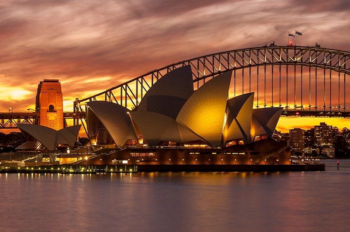

KIẾN TRÚC SÁNG TẠO, PHÁ VỠ MỌI KHUÔN MẪU
Vào năm 1956, ở Australia cuộc thi thiết kế nhà hát Opera quốc gia do Cahill tổ chức
nhận được 233 đề án.
Trong buổi trao giải tác phẩm xuất sắc nhất với giải thưởng trị giá 5.000 bảng trên bán đảo
Bennelong Point của Sydney.
Lúc bấy giờ đã xướng tên kiến trúc sư 38 tuổi người Đan Mạch – Jorn Utzon.
Nhờ vào sự đột phá với lối thiết kế hình cong đặc trưng.
Các mái vòm mà thiết kế của Utzon giành chiến thắng với những hình ảnh tạo liên tưởng tới những
cánh buồm trắng ngoài khơi xa hay hình con sò.
Chính vì vậy mà Nhà hát Opera Sydney Úc còn có tên gọi thân quen khác là Nhà hát Con Sò Sydney.
Utzon đã phá vỡ hoàn toàn lối tạo hình khối vuông và tam giác của kiến trúc thời đó.
Với tầm nhìn xa về sự kết hợp giữa điêu khắc và xây dựng các đường cong trên bến cảng.
Tất nhiên, bởi thế giới lúc bấy giờ đây là công trình đầu tiên được thiết kế và xây dựng theo
lối kiến trúc này.
Do vậy mà thách thức đặt ra cho ông là vô cùng lớn.
Đến năm 1957, mô hình nhà hát Opera Sydney được mang ra giới thiệu tại Toà thị chính Sydney và
được khởi công xây dựng vào năm 1959.
Công trình này đã vượt quá sự mong đợi của người dân Sydney cũng như nước Úc.

Nhà hát Opera Sydney – biểu tượng của xứ sở chuột túi.
Vị trí nhà hát Sydney
MỘT SỐ SỰ THẬT LÝ THÚ VỀ SYDNEY OPERA HOUSE
OPERA SYDNEY LÀ DI SẢN VĂN HÓA THẾ GIỚI
Hình ảnh đặc trung cho nước Úc chính là nhà hát Con Sò Opera Sydney. Nhà hát này đã hính thực được công nhận là di sản thế giới vào năm 2007. Sau Brasilia đây là di tích thứ 2 trên thế giới được công nhận là di sản khi vị kiến trúc sư thiết kế ra nó vẫn còn sống. Trong danh sách các di sản văn hóa thế giới nhà hát Opera là công trình trẻ tuổi nhất. Nhà hát này còn được xem là công trình chiếm vị trí tương đương với các công trình nổi tiếng khác, có giá trị nổi bật trên thế giới như Taj Mahal ở Ấn Độ, Kim Tự Tháp ở Ai Cập hay tháp Eiffel ở Pháp.
NGẮM HOÀNG HÔN TẠI NHÀ HÁT OPERA SYDNEY
Nhà hát Opera có màu gì, hầu hết các du khách sẽ thật tự tin trả lời rằng đó là màu be hoặc màu trắng. Nhưng sự thật là toàn bộ cấu trúc công trình có đến hơn một triệu viên ngói lợp Thụy Điển bao phủ và chúng sẽ theo thời gian trong ngày mà thay đổi màu sắc phản chiếu lại theo ánh sáng mặt trời. Khi hoàng hôn buông, nhà hát Opera sẽ chuyển thành màu cam cháy như màu bầu trời hoặc hồng tím. Bởi vậy đừng bỏ qua một trải nghiệm tuyệt vời này nếu bạn có dịp đến khám phá nhà hát Opera Sydney.
LƯU Ý CẦN BIẾT KHI ĐẾN NHÀ HÁT OPERA SYDNEY
@ Nguồn: internationalstudentcareers.com